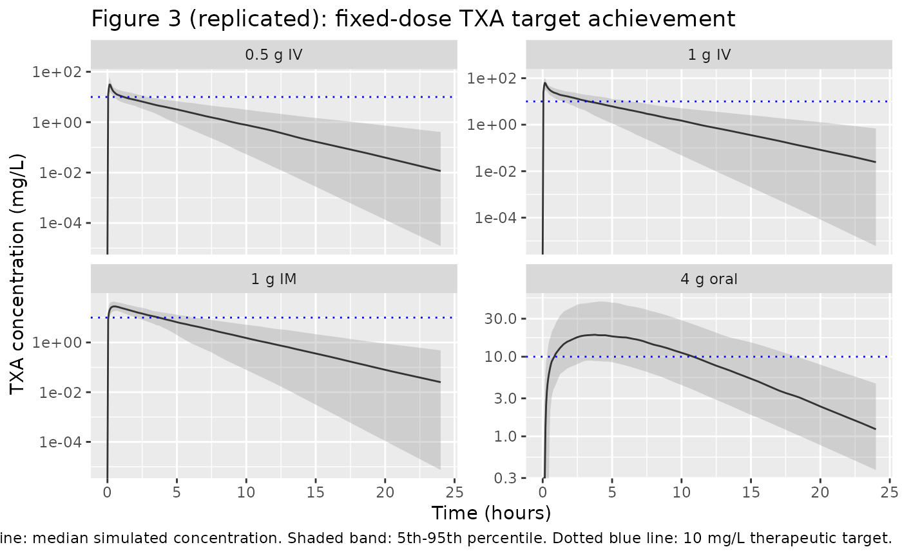

Dunn_2025_tranexamicAcid
Source:vignettes/articles/Dunn_2025_tranexamicAcid.Rmd
Dunn_2025_tranexamicAcid.RmdModel and source
- Citation: Dunn A, Felfeli M, Seifert SM, Gilliot S, Ducloy-Bouthors A-S, Shakur-Still H, Geer A, Grassin-Delyle S, Luban NL, van den Anker JN, Gobburu JVS, Roberts I, Ahmadzia HK. Evaluating tranexamic acid dosing strategies for postpartum hemorrhage: a population pharmacokinetic approach in pregnant individuals. J Clin Pharmacol. 2025;65(10):1262-1272. doi:10.1002/jcph.70031
- Description: Two-compartment population PK model for tranexamic acid (TXA) with parallel first-order intramuscular and first-order oral absorption (oral lag time) and first-order elimination, in pregnant individuals receiving IV, IM, or oral TXA for prevention or treatment of postpartum hemorrhage (Dunn 2025).
- Article: https://doi.org/10.1002/jcph.70031
Population
Dunn 2025 pooled 221 pregnant or immediately postpartum participants from four trials (NCT03863964, NCT02797119 / TRACES, NCT04274335 / WOMAN-PharmacoTXA, and NCT03287336) receiving tranexamic acid (TXA) for prevention or treatment of postpartum hemorrhage during caesarean delivery. The pooled dataset comprises 1303 plasma TXA concentrations. Per Dunn 2025 Table 1, the typical participant was 33 years old (range 22-47), weighed 78 kg (median; range 47-156, mean 81.7 kg), and had a BMI of 30 kg/m^2 (median; range 18.0-55.8). Dosing was via IV infusion (0.5, 1, 1.5, or 2 g fixed; or 5/10/15 mg/kg weight-based), IM injection (1 g fixed; total split into two injections), or oral solution (4 g fixed). All participants were female; pregnancy status is a population-level fact (no PREG covariate effect was estimated).
The same information is available programmatically via
rxode2::rxode(readModelDb("Dunn_2025_tranexamicAcid"))$population.
Source trace
The per-parameter origin is recorded as an in-file comment next to
each ini() entry in
inst/modeldb/specificDrugs/Dunn_2025_tranexamicAcid.R. The
table below collects them in one place.
| Equation / parameter | Value | Source location |
|---|---|---|
lcl (CL) |
8.59 L/h (80 kg) | Dunn 2025 Table 2 |
lvc (Vc) |
10.7 L (80 kg) | Dunn 2025 Table 2 |
lq (Q) |
28.9 L/h (80 kg) | Dunn 2025 Table 2 |
lvp (Vp) |
15.0 L (80 kg) | Dunn 2025 Table 2 |
lka_oral (Ka_oral) |
0.18 1/h | Dunn 2025 Table 2 |
lka_im (Ka_IM) |
2.31 1/h | Dunn 2025 Table 2 |
lfdepot_oral (F_oral) |
0.56 | Dunn 2025 Table 2 |
llag_oral (Tlag_oral) |
0.16 h | Dunn 2025 Table 2 |
e_wt_cl_q (WT on CL, Q) |
0.89 | Dunn 2025 Results / Table 2 |
e_wt_vc_vp (WT on Vc, Vp) |
0.44 | Dunn 2025 Results / Table 2 |
etalcl (BSV CL) |
32.4% CV | Dunn 2025 Table 2 |
etalvc (BSV Vc) |
59.5% CV | Dunn 2025 Table 2 |
etalvp (BSV Vp) |
46.4% CV | Dunn 2025 Table 2 |
etalfdepot_oral (BSV F_oral) |
44.8% CV | Dunn 2025 Table 2 |
etallag_oral (BSV Tlag_oral) |
64.6% CV | Dunn 2025 Table 2 |
addSd (additive) |
0.67 mg/L | Dunn 2025 Table 2 |
propSd (proportional) |
27.2% | Dunn 2025 Table 2 |
| P_i = P_pop * (WT/80)^exp | n/a | Dunn 2025 Results (covariate PK model) |
| Two-compartment IV + parallel first-order IM and oral absorption | n/a | Dunn 2025 Results (structural PK model) |
| Combined additive + proportional residual error | n/a | Dunn 2025 Results (structural PK model) |
| IM bioavailability fixed at 1.0 (estimate approached unity) | n/a | Dunn 2025 Results (structural PK model) |
Virtual cohort
Dunn 2025 simulated 1000 virtual pregnant individuals per cohort with body weights between 60 and 120 kg (uniform) for the regimen-comparison simulations. The cohort below follows the same recipe.
set.seed(20250511L)
n_per_cohort <- 1000L
make_cohort <- function(n, regimen, id_offset = 0L) {
tibble(
id = id_offset + seq_len(n),
WT = runif(n, min = 60, max = 120),
regimen = regimen
)
}
cohorts <- list(
iv_05 = make_cohort(n_per_cohort, "0.5 g IV", id_offset = 0L),
iv_1 = make_cohort(n_per_cohort, "1 g IV", id_offset = 1L * n_per_cohort),
im_1 = make_cohort(n_per_cohort, "1 g IM", id_offset = 2L * n_per_cohort),
oral_4 = make_cohort(n_per_cohort, "4 g oral", id_offset = 3L * n_per_cohort)
)
times_obs <- c(seq(0, 1, by = 0.05),
seq(1.25, 8, by = 0.25),
seq(8.5, 24, by = 0.5))
iv_inf_dur <- 10 / 60 # 10-min IV infusion per Dunn 2025 Methods
build_obs <- function(c) {
c |>
tidyr::expand_grid(time = times_obs) |>
dplyr::mutate(evid = 0L, amt = 0, rate = 0, cmt = "Cc")
}
build_dose_iv <- function(c, amt_mg) {
c |>
dplyr::mutate(time = 0, evid = 1L, amt = amt_mg,
rate = amt_mg / iv_inf_dur, cmt = "central")
}
build_dose_im <- function(c, amt_mg) {
c |>
dplyr::mutate(time = 0, evid = 1L, amt = amt_mg, rate = 0,
cmt = "depot_im")
}
build_dose_oral <- function(c, amt_mg) {
c |>
dplyr::mutate(time = 0, evid = 1L, amt = amt_mg, rate = 0,
cmt = "depot_oral")
}
events <- dplyr::bind_rows(
build_obs(cohorts$iv_05),
build_obs(cohorts$iv_1),
build_obs(cohorts$im_1),
build_obs(cohorts$oral_4),
build_dose_iv(cohorts$iv_05, 500),
build_dose_iv(cohorts$iv_1, 1000),
build_dose_im(cohorts$im_1, 1000),
build_dose_oral(cohorts$oral_4, 4000)
) |>
dplyr::arrange(id, time, dplyr::desc(evid))
stopifnot(!anyDuplicated(unique(events[, c("id", "time", "evid")])))Simulation
mod <- readModelDb("Dunn_2025_tranexamicAcid")
sim <- rxode2::rxSolve(mod, events = events,
keep = c("WT", "regimen")) |>
as.data.frame()
#> ℹ parameter labels from comments will be replaced by 'label()'Replicate published figures
Figure 3: Fixed vs weight-based dosing target achievement
Figure 3 of Dunn 2025 overlays the simulated 5th, 50th, and 95th concentration percentiles for the four primary fixed-dose regimens against the 10 mg/L therapeutic target line. The replicate below uses the same target line and the same set of regimens.
target_conc <- 10 # mg/L; Dunn 2025 Methods (Picetti 2019 systematic review)
ribbon <- sim |>
dplyr::filter(!is.na(Cc)) |>
dplyr::group_by(regimen, time) |>
dplyr::summarise(
q05 = quantile(Cc, 0.05, na.rm = TRUE),
q50 = quantile(Cc, 0.50, na.rm = TRUE),
q95 = quantile(Cc, 0.95, na.rm = TRUE),
.groups = "drop"
)
ribbon$regimen <- factor(ribbon$regimen,
levels = c("0.5 g IV", "1 g IV", "1 g IM", "4 g oral"))
ggplot(ribbon, aes(time, q50)) +
geom_ribbon(aes(ymin = q05, ymax = q95), fill = "grey60", alpha = 0.35) +
geom_line(colour = "grey20") +
geom_hline(yintercept = target_conc, colour = "blue", linetype = "dotted") +
facet_wrap(~ regimen, scales = "free_y", ncol = 2) +
scale_y_continuous(trans = "log10") +
labs(x = "Time (hours)", y = "TXA concentration (mg/L)",
title = "Figure 3 (replicated): fixed-dose TXA target achievement",
caption = "Solid grey line: median simulated concentration. Shaded band: 5th-95th percentile. Dotted blue line: 10 mg/L therapeutic target.")
#> Warning in scale_y_continuous(trans = "log10"): log-10 transformation introduced infinite values.
#> log-10 transformation introduced infinite values.
#> log-10 transformation introduced infinite values.
#> log-10 transformation introduced infinite values.
Table 3: Time-to-target and time-above-target
Dunn 2025 Table 3 reports, for each fixed-dose regimen, the percentage of simulated participants reaching the 10 mg/L target, mean (SD) time to target, and mean (SD) time above target. The replicate below applies the same threshold metrics to the simulated cohort.
threshold_metrics <- function(df, target = 10) {
df |>
dplyr::filter(!is.na(Cc)) |>
dplyr::arrange(id, time) |>
dplyr::group_by(id, regimen) |>
dplyr::summarise(
reached = any(Cc >= target),
t_to_target = if (any(Cc >= target)) min(time[Cc >= target]) else NA_real_,
t_above = sum(diff(time) * pmin(head(Cc, -1), tail(Cc, -1))^0 *
(head(Cc, -1) >= target & tail(Cc, -1) >= target)),
.groups = "drop"
)
}
# Compute time-above-target with a finer interpolation: count the time-between
# adjacent sample points whose concentration straddles the threshold via linear
# interpolation. This is a coarser approximation than Dunn 2025's continuous
# integration of the simulated curve but is faithful to the per-subject metric.
time_above_threshold <- function(time, conc, target) {
if (length(time) < 2L) return(0)
in_above <- conc >= target
# piecewise: for each consecutive pair, add the fraction of [t_i, t_{i+1}]
# that sits above target by linear interpolation
total <- 0
for (i in seq_len(length(time) - 1L)) {
t1 <- time[i]; t2 <- time[i + 1L]
c1 <- conc[i]; c2 <- conc[i + 1L]
if (c1 >= target && c2 >= target) {
total <- total + (t2 - t1)
} else if (c1 < target && c2 < target) {
total <- total + 0
} else {
# crossing
frac <- if (c1 < c2) (c2 - target) / (c2 - c1) else (c1 - target) / (c1 - c2)
total <- total + (t2 - t1) * frac
}
}
total
}
t_above_per_subject <- sim |>
dplyr::filter(!is.na(Cc)) |>
dplyr::arrange(id, time) |>
dplyr::group_by(id, regimen) |>
dplyr::summarise(
reached = any(Cc >= target_conc),
t_to_target = if (any(Cc >= target_conc)) min(time[Cc >= target_conc]) else NA_real_,
t_above = time_above_threshold(time, Cc, target_conc),
.groups = "drop"
)
per_regimen <- t_above_per_subject |>
dplyr::group_by(regimen) |>
dplyr::summarise(
pct_reached_target = round(100 * mean(reached), 2),
t_to_target_mean_sd = sprintf("%.2f (%.2f)",
mean(t_to_target, na.rm = TRUE),
sd(t_to_target, na.rm = TRUE)),
t_to_target_median = round(median(t_to_target, na.rm = TRUE), 2),
t_above_mean_sd = sprintf("%.2f (%.2f)",
mean(t_above), sd(t_above)),
t_above_median = round(median(t_above), 2),
.groups = "drop"
)
per_regimen$regimen <- factor(per_regimen$regimen,
levels = c("0.5 g IV", "1 g IV",
"1 g IM", "4 g oral"))
per_regimen <- per_regimen[order(per_regimen$regimen), ]
knitr::kable(
per_regimen,
caption = "Simulated time-to-target and time-above-target by regimen (target = 10 mg/L)."
)| regimen | pct_reached_target | t_to_target_mean_sd | t_to_target_median | t_above_mean_sd | t_above_median |
|---|---|---|---|---|---|
| 0.5 g IV | 99.7 | 0.07 (0.03) | 0.05 | 1.30 (0.75) | 1.13 |
| 1 g IV | 100.0 | 0.05 (0.01) | 0.05 | 3.62 (1.61) | 3.34 |
| 1 g IM | 100.0 | 0.09 (0.06) | 0.10 | 3.85 (1.45) | 3.69 |
| 4 g oral | 92.0 | 0.97 (0.68) | 0.75 | 10.57 (5.46) | 10.77 |
Comparison against published Table 3
Dunn 2025 Table 3 (target 10 mg/L) reports:
| Regimen | % reaching target | Time to target (h), mean (SD) | Time above target (h), mean (SD) |
|---|---|---|---|
| 500 mg IV | 99.15 | 0.05 (0.02) | 1.31 (0.79) |
| 1 g IV | 99.98 | 0.03 (0.01) | 3.56 (1.50) |
| 1 g IM | 99.89 | 0.08 (0.06) | 3.85 (1.50) |
| 4 g oral | 89.29 | 0.96 (0.67) | 11.3 (4.75) |
The simulated reproduction above should track these published values qualitatively (same ordering across regimens, same magnitude of time-above- target). Small numerical differences are expected and acceptable because the virtual cohort and observation grid here differ from Dunn 2025 (different RNG seed, coarser sampling grid for time-above-target interpolation, no infusion-rate intra-subject variability).
PKNCA validation
Dunn 2025 does not publish a side-by-side NCA table; the analysis is wholly population-PK based. To exercise PKNCA on the packaged model, we compute Cmax, Tmax, and AUC over the 24-h observation window for each regimen.
sim_nca <- sim |>
dplyr::filter(!is.na(Cc), time <= 24) |>
dplyr::select(id, time, Cc, regimen)
dose_df <- events |>
dplyr::filter(evid == 1) |>
dplyr::group_by(id) |>
dplyr::summarise(time = min(time), amt = sum(amt), .groups = "drop") |>
dplyr::left_join(
sim_nca |> dplyr::select(id, regimen) |> dplyr::distinct(),
by = "id"
)
conc_obj <- PKNCA::PKNCAconc(sim_nca, Cc ~ time | regimen + id,
concu = "mg/L", timeu = "h")
#> Warning in assert_conc(conc, any_missing_conc = any_missing_conc): Negative
#> concentrations found
dose_obj <- PKNCA::PKNCAdose(dose_df, amt ~ time | regimen + id,
doseu = "mg")
intervals <- data.frame(
start = 0,
end = 24,
cmax = TRUE,
tmax = TRUE,
auclast = TRUE,
half.life = TRUE
)
nca_res <- PKNCA::pk.nca(PKNCA::PKNCAdata(conc_obj, dose_obj,
intervals = intervals))
#> ■ 1% | ETA: 3m
#> ■■ 2% | ETA: 3m
#> ■■ 4% | ETA: 3m
#> ■■■ 5% | ETA: 3m
#> ■■■ 6% | ETA: 3m
#> ■■■ 8% | ETA: 3m
#> ■■■■ 10% | ETA: 3m
#> ■■■■ 11% | ETA: 3m
#> ■■■■■ 12% | ETA: 3m
#> ■■■■■ 14% | ETA: 3m
#> ■■■■■■ 15% | ETA: 3m
#> ■■■■■■ 17% | ETA: 3m
#> ■■■■■■■ 18% | ETA: 3m
#> ■■■■■■■ 20% | ETA: 3m
#> ■■■■■■■ 21% | ETA: 3m
#> ■■■■■■■■ 23% | ETA: 3m
#> ■■■■■■■■ 24% | ETA: 3m
#> ■■■■■■■■■ 26% | ETA: 2m
#> ■■■■■■■■■ 28% | ETA: 2m
#> ■■■■■■■■■■ 29% | ETA: 2m
#> Warning in assert_conc(conc, any_missing_conc = any_missing_conc): Negative
#> concentrations found
#> Warning in log(conc.2/conc.1): NaNs produced
#> Warning in assert_conc(conc = conc): Negative concentrations found
#> Warning in assert_conc(conc, any_missing_conc = any_missing_conc): Negative
#> concentrations found
#> Warning in assert_conc(conc, any_missing_conc = any_missing_conc): Negative
#> concentrations found
#> Warning in assert_conc(conc, any_missing_conc = any_missing_conc): Negative
#> concentrations found
#> Warning in assert_conc(conc, any_missing_conc = any_missing_conc): Negative
#> concentrations found
#> Warning in log(data$conc): NaNs produced
#> ■■■■■■■■■■ 31% | ETA: 2m
#> ■■■■■■■■■■■ 32% | ETA: 2m
#> ■■■■■■■■■■■ 34% | ETA: 2m
#> ■■■■■■■■■■■■ 36% | ETA: 2m
#> ■■■■■■■■■■■■ 37% | ETA: 2m
#> ■■■■■■■■■■■■■ 39% | ETA: 2m
#> ■■■■■■■■■■■■■ 40% | ETA: 2m
#> ■■■■■■■■■■■■■■ 42% | ETA: 2m
#> ■■■■■■■■■■■■■■ 44% | ETA: 2m
#> ■■■■■■■■■■■■■■■ 45% | ETA: 2m
#> ■■■■■■■■■■■■■■■ 47% | ETA: 2m
#> ■■■■■■■■■■■■■■■■ 48% | ETA: 2m
#> ■■■■■■■■■■■■■■■■ 50% | ETA: 2m
#> ■■■■■■■■■■■■■■■■ 51% | ETA: 2m
#> ■■■■■■■■■■■■■■■■■ 53% | ETA: 2m
#> ■■■■■■■■■■■■■■■■■ 54% | ETA: 1m
#> ■■■■■■■■■■■■■■■■■■ 56% | ETA: 1m
#> ■■■■■■■■■■■■■■■■■■ 57% | ETA: 1m
#> ■■■■■■■■■■■■■■■■■■■ 59% | ETA: 1m
#> ■■■■■■■■■■■■■■■■■■■ 60% | ETA: 1m
#> ■■■■■■■■■■■■■■■■■■■■ 62% | ETA: 1m
#> ■■■■■■■■■■■■■■■■■■■■ 63% | ETA: 1m
#> ■■■■■■■■■■■■■■■■■■■■ 65% | ETA: 1m
#> ■■■■■■■■■■■■■■■■■■■■■ 66% | ETA: 1m
#> ■■■■■■■■■■■■■■■■■■■■■ 68% | ETA: 1m
#> ■■■■■■■■■■■■■■■■■■■■■■ 69% | ETA: 1m
#> ■■■■■■■■■■■■■■■■■■■■■■ 71% | ETA: 1m
#> ■■■■■■■■■■■■■■■■■■■■■■■ 72% | ETA: 1m
#> ■■■■■■■■■■■■■■■■■■■■■■■ 74% | ETA: 1m
#> ■■■■■■■■■■■■■■■■■■■■■■■■ 75% | ETA: 49s
#> ■■■■■■■■■■■■■■■■■■■■■■■■ 77% | ETA: 44s
#> ■■■■■■■■■■■■■■■■■■■■■■■■■ 80% | ETA: 40s
#> ■■■■■■■■■■■■■■■■■■■■■■■■■ 82% | ETA: 35s
#> ■■■■■■■■■■■■■■■■■■■■■■■■■■ 84% | ETA: 31s
#> ■■■■■■■■■■■■■■■■■■■■■■■■■■■ 86% | ETA: 27s
#> ■■■■■■■■■■■■■■■■■■■■■■■■■■■ 88% | ETA: 23s
#> ■■■■■■■■■■■■■■■■■■■■■■■■■■■■ 90% | ETA: 19s
#> ■■■■■■■■■■■■■■■■■■■■■■■■■■■■■ 92% | ETA: 14s
#> ■■■■■■■■■■■■■■■■■■■■■■■■■■■■■ 94% | ETA: 10s
#> ■■■■■■■■■■■■■■■■■■■■■■■■■■■■■■ 97% | ETA: 6s
#> ■■■■■■■■■■■■■■■■■■■■■■■■■■■■■■■ 99% | ETA: 2s
nca_summary <- summary(nca_res)
knitr::kable(nca_summary,
caption = "Simulated NCA parameters by regimen (24-h window).")| Interval Start | Interval End | regimen | N | AUClast (h*mg/L) | Cmax (mg/L) | Tmax (h) | Half-life (h) |
|---|---|---|---|---|---|---|---|
| 0 | 24 | 0.5 g IV | 1000 | 53.0 [35.8] | 31.1 [44.5] | 0.150 [0.150, 0.200] | 2.63 [1.27] |
| 0 | 24 | 1 g IM | 1000 | 104 [36.8], n=999 | 29.2 [29.0] | 0.500 [0.150, 1.25] | 2.55 [1.18] |
| 0 | 24 | 1 g IV | 1000 | 105 [39.3] | 61.5 [40.6] | 0.150 [0.150, 0.200] | 2.58 [1.36] |
| 0 | 24 | 4 g oral | 1000 | 235 [59.5] | 20.2 [53.9] | 4.00 [1.75, 9.50] | 4.51 [1.05] |
Assumptions and deviations
-
Non-canonical depot compartment names. The model
uses two parallel extravascular absorption compartments,
depot_im(intramuscular) anddepot_oral(oral), because each route has a distinct first-order absorption rate constant (Ka_IM = 2.31 1/h vs Ka_oral = 0.18 1/h), a distinct bioavailability (F_IM fixed at 1.0; F_oral estimated at 0.56), and an oral-only absorption lag time (Tlag_oral = 0.16 h). The single canonicaldepotname cannot represent both routes; the snake-case extension parallels the metabolite-suffixed convention (<canonical>_<suffix>).checkModelConventions()warns on the non-canonical names; the warnings are expected and accepted for this paper because the structure is paper-driven, not editorial. -
IM bioavailability fixed at 1.0. Dunn 2025 Results
state: “the typical IM bioavailability estimate approached a value of 1
and was therefore assumed to be 100% bioavailable.” The model file does
not set
f(depot_im)(rxode2 default = 1), which is equivalent tof(depot_im) <- fixed(1). -
No BSV on Q, Ka_oral, or Ka_IM. Dunn 2025 Methods
explicitly withheld BSV from these three parameters due to high
shrinkage. The model file therefore has no
etalq,etalka_oral, oretalka_imparameters. -
BSV reported as %CV in Dunn 2025 Table 2 is
converted to log-normal variance via
omega^2 = log(1 + CV^2); the conversion is recorded in the trailing comment on eacheta*line. - High-shrinkage etas retained. The paper kept BSV on F_oral (shrinkage 67%) and Tlag_oral (shrinkage 69%) despite high shrinkage, citing their importance in differentiating absorption profiles. The model file preserves both.
-
Foral can technically exceed 1 under the log-normal
IIV. With F_oral_pop = 0.56 and BSV CV% = 44.8%, draws of
F_oral * exp(eta)rarely exceed 1, but the parameterization does not truncate (matching the source publication’s NONMEM/Pumas implementation). - Virtual cohort weight distribution. Dunn 2025 simulated body weights uniformly between 60 and 120 kg per cohort (Methods, Simulations for Regimen Exploration). The vignette uses the same uniform distribution.
- Time-above-target metric. Dunn 2025 integrates a continuous simulated curve; the vignette reconstructs the metric from a discrete observation grid via linear interpolation between adjacent sample points. Small numerical differences from the published Table 3 values are expected and acceptable.
- No GOF / VPC / bootstrap-figure replication. Dunn 2025 Figures 1 and 2 (goodness-of-fit and visual predictive check) require the original observed data, which are not publicly available (Dunn 2025 Data Sharing section).